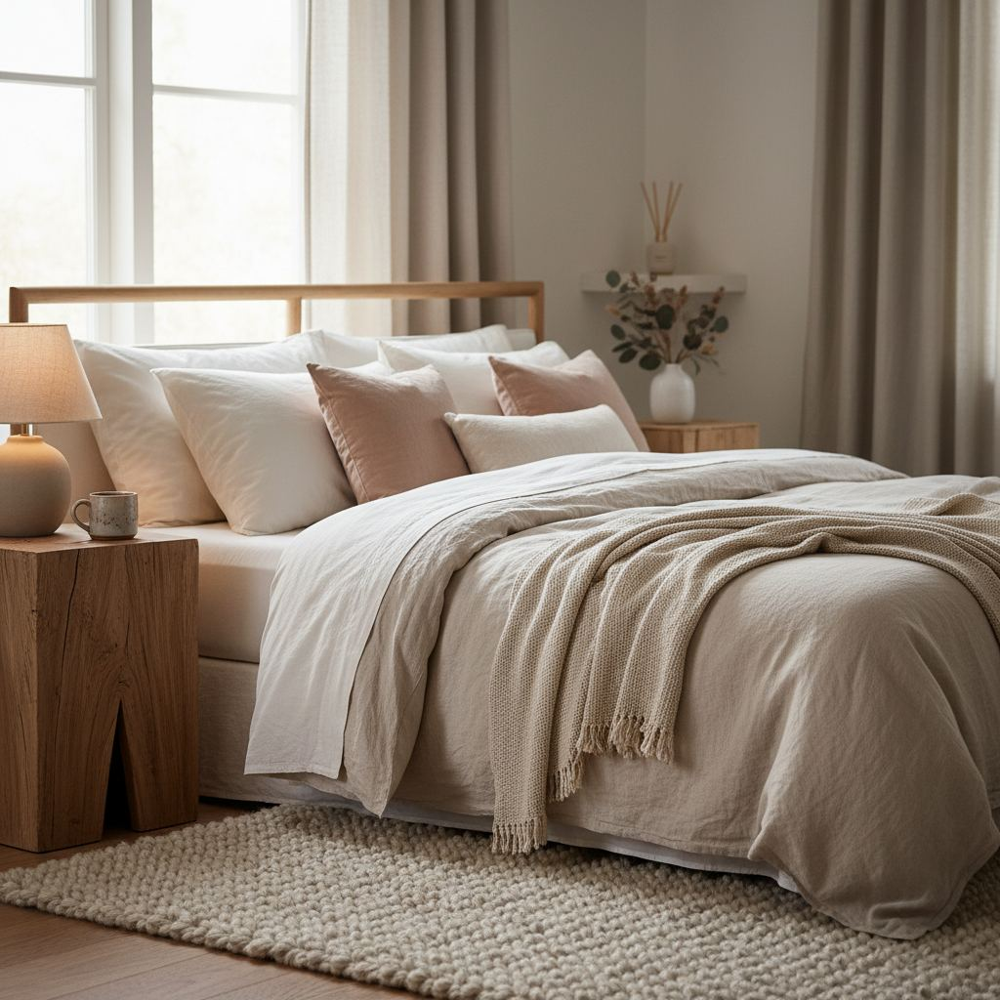

Cozy Bedroom Ideas: 12 Changes That Actually Make a Difference

Cozy is not a single style — it is what happens when several small choices point in the same direction. Here is what actually moves the needle.
Layer the bed properly
A properly layered bed has a fitted sheet, a flat sheet, a duvet or comforter, and one to two throws. Skip any layer and the bed reads as unfinished.
Light the room warmly
Replace every bulb in the room with a 2700K warm-white bulb. Add at least one light at bed height (bedside lamps or wall-mounted sconces) so you never need the overhead after dark.
Add three textures
Combine a smooth surface (cotton sheets), a rough one (chunky-knit throw), and something soft underfoot (a bedside rug or sheepskin). Three textures is the magic number — fewer feels flat, more feels busy.
Choose a warm color story
Bedrooms benefit from warmer neutrals: creams, soft browns, warm greys, muted terracotta. Cool greys and stark whites often make bedrooms feel clinical.

Incorporate Natural Materials and Textures
The feeling of cozy often stems from connection to nature. Bringing in natural materials immediately grounds the space and adds tactile warmth. Think beyond just a sisal rug; consider how wood, stone, and wool integrate into the smaller details. For instance, a solid oak bedside table, even a small 18-inch diameter pedestal, provides a much warmer counterpoint to a metal or glass option. Raw, untreated materials are best for this, as their imperfections and grain variations add character that manufactured finishes cannot replicate. Expect to pay around $150-$300 for a quality solid wood side table, or look for vintage finds to save. Avoid overly glossy finishes which can feel cold and synthetic.
Beyond the Big Pieces
Smaller accents make a big difference. Swap out plastic plant pots for terracotta or woven seagrass planters. Use a ceramic mug for your evening tea instead of a thin glass. Consider a set of linen-blend curtains at 96 inches long, puddled slightly on the floor, rather than standard cotton blinds. These small, deliberate choices accumulate to create an enveloping softness. A good quality ceramic vase, for example, can be found for $20-$50 and instantly elevates a corner. The key is to choose items that feel good to touch and have an inherent connection to the earth.
Add a Thoughtful Rug Layout
A rug isn't just about covering the floor; it's about defining the space and adding a soft landing for your feet – crucial for coziness. For a queen-sized bed, I recommend at least an 8x10 foot rug, positioned so that at least two-thirds of the bed sits on it, with 12-18 inches extending on either side. This allows you to step onto warmth when getting in and out of bed. For a king, elevate to a 9x12 or even 10x14 for full coverage. The material matters immensely: a high-pile wool rug provides superior insulation and sound dampening, enhancing that 'cocooned' feeling. While a 9x12 wool rug can range from $800 to $3,000+, it's a long-term investment in comfort.
Common Rug Mistakes
- Too small: A 5x7 rug under a queen bed looks awkward and doesn't serve its purpose.
- Synthetic, low-pile materials: These lack the plushness and warmth crucial for a cozy bedroom.
- Ignoring color: A rug should complement your existing color scheme, not introduce a jarring new tone. Stick with muted, earthy, or warm neutrals.
Introduce Subtle Scent Elements
Our sense of smell is powerfully linked to comfort and memory. A cozy bedroom often has a subtle, inviting aroma, not an overpowering one. Avoid heavily perfumed air fresheners, which can feel artificial. Instead, opt for natural diffusers. Essential oils like lavender, chamomile, cedarwood, or a custom blend using an ultrasonic diffuser can gently scent the air. A good diffuser, like the Vitruvi Stone Diffuser, costs around $120 and uses water and a few drops of pure essential oil. Run it for 30 minutes before bed rather than leaving it on all night.
Candles and More
High-quality soy or beeswax candles with cotton wicks offer a gentle glow and natural aroma. Look for scents like sandalwood, vanilla, or amber. A single large candle, rather than multiple small ones, provides a better diffusion of scent. For a flameless option, consider a small bowl of dried botanicals like potpourri (ensure it's naturally scented, not sprayed) or a sachet of dried lavender tucked into a drawer. The goal is a gentle beckoning, not an assault on the senses. Expect to pay $30-$60 for a premium soy candle that burns cleanly for 40+ hours.
Optimize Window Treatments for Privacy and Warmth
Windows are portals, but they can also be sources of cold drafts and a lack of privacy, undermining coziness. Layering window treatments is key. Start with a blackout roller shade or lined Roman blind for light control and insulation. Then, install floor-length drapery panels on a rod that extends 8-12 inches beyond the window frame on each side. This allows the drapes to completely clear the window when open, maximizing natural light, and offers full coverage when closed. Choose thermal-lined drapes in a heavier fabric like velvet, linen-blend, or thick cotton. Aim for a rod height of 4-6 inches above the window frame for an elevated look.
Material and Measurement Guide
For a standard 8-foot ceiling and a window height of 60 inches, you'll likely need 96-inch long panels. Measure your window width and multiply by 1.5 to 2 to get the full width of fabric needed for a luxurious, gathered look. For example, if your window is 50 inches wide, you'll need drapes that cover 75-100 inches in total width. This usually means two panels, or four if you prefer a fuller look on wide windows. Expect to budget $150-$400 for a set of high-quality, lined drapery panels and a sturdy rod for a standard-sized window.
Curate Personal Touches
A truly cozy space reflects the individual who inhabits it. It's not about generic decor; it's about thoughtfully chosen items that tell a story. Instead of a gallery wall filled with mass-produced prints, select a few meaningful pieces. This could be a framed photograph from a favorite trip, a piece of art created by someone you know, or a small collection of antique books. These items add soul and a sense of history to the room. The key word here is 'curate' – less is often more. Overcrowding surfaces with clutter creates visual noise, which works against the calm, cozy aesthetic. Aim for a maximum of 3-5 carefully selected items on a dresser or bedside table, ensuring they have varying heights and textures.
Meaningful Memorabilia
Think about items that evoke positive memories or feelings. A small, handcrafted wooden box on your dresser could hold tiny treasures. A framed letter or a travel souvenir can be integrated seamlessly. These details, though small, elevate the space from merely decorated to genuinely lived-in and loved. It's not about buying new things, but about appreciating and showcasing what you already have that brings you joy. This emphasis on scarcity and meaning over abundance ensures that each item contributes positively to the overall cozy atmosphere, rather than just occupying space.
Key takeaways
- Layer the bed with sheet, duvet, and throws.
- 2700K bulbs in every fixture.
- Combine three distinct textures.
- Warm neutrals over cool ones.
Frequently asked questions
What is the best color for a restful bedroom?
Warm, muted colors — soft clay, oat, warm grey, deep green — tend to feel most restful. Avoid saturated blues and cool greys if you want warmth.
Do I need blackout curtains?
For most sleepers, yes. Even ambient street light delays deep sleep. Lined curtains or a well-fitted blackout roller blind make a bigger difference than most decor changes.

Sophia Bennett is a certified interior stylist and the senior editor at Styleire. She has spent more than eight years helping homeowners and renters create warm, functional interiors, with hands-on experience across small city apartments and family homes. Her work has been informed by close collaboration with independent designers, craftspeople, and product testers.
View full profile →Related reading

Small Bedroom Layout Ideas That Free Up Floor Space
A small bedroom does not need to feel cramped. It needs a layout that respects the walking path and the light.

How to Choose Bedding That Actually Feels Good
Thread count is mostly noise. Here is what actually determines how bedding feels.